Cấu hình trước khi sử dụng dịch vụ
Admin của chủ thể ký kết thực hiện cấu hình các thông tin dưới đây trước khi sử dụng
Thiết lập Loại Hợp Đồng
-
Loại Hợp Đồng: dùng để phân nhóm các hợp đồng của đơn vị, hỗ trợ cho tìm kiếm và cấu hình các chức năng khác trong hệ thống.
-
Hệ thống quy định: mỗi đơn vị sử dụng dịch vụ có ít nhất 1 loại hợp đồng, các chủ thể là khách hàng cuối chỉ thực hiện ký hợp đồng không thực hiện chức năng này.
-
Các bước thiết lập loại hợp đồng:
- Chọn menu chính Quản lý TT doanh nghiệp (menu trái)
- Chọn menu chức năng Loại hợp đồng
- Nhấn nút Thêm mới
- Điền thông tin Loại hợp đồng của đơn vị cần sử dụng => Nhấn Thêm loại hợp đồng
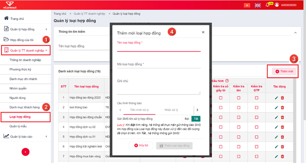
Thiết lập Mẫu Hợp Đồng
-
Mẫu Hợp Đồng: cho phép nhân viên đơn vị thiết lập nhanh hợp đồng, ko cần soạn thảo sẵn tại máy tính.
-
Đơn vị có thể tùy chọn sử dụng Mẫu hoặc không, hiện hệ thống có 8 mẫu cố định để đơn vị lựa chọn.
-
Các bước thiết lập loại hợp đồng:
-
Chọn menu chính “Quản lý TT doanh nghiệp” (menu trái)
-
Chọn menu chức năng Mẫu hợp đồng
-
Nhấn nút Thêm mới
-
Chọn một mẫu có sẵn của hệ thống > Điền thông tin Mẫu hợp đồng của đơn vị cần sử dụng > Nhấn Thêm mẫu
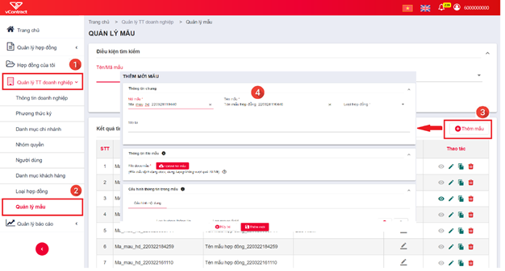
Thiết lập Phương Thức Ký
-
Phương thức ký: Là hình thức ký số mà đơn vị sử dụng để ký hợp đồng.
-
Hệ thống quy định:
- Đơn vị tham gia ký kết là Doanh nghiệp/Tổ chức thì bắt buộc ký bằng CA (usbtoken, sim Ca hoặc HSM).
-
Đơn vị tham gia ký kết là Cá nhân thì có thể ký bằng CA (usbtoken, sim CA hoặc HSM) hoặc OTP.
-
Các bước thiết lập phương thức ký:
-
Chọn menu chính Quản lý TT doanh nghiệp (menu trái)
-
Chọn menu chức năng Phương thức ký
-
Nhấn nút Thêm mới
-
Điền thông tin 1 hình thức ký > Nhấn Lưu
Ngoài ra, người dùng có thể thiết lập nhanh Phương thức ký trên trực tiếp trang ký 1 hợp đồng (tương đương bước 4)
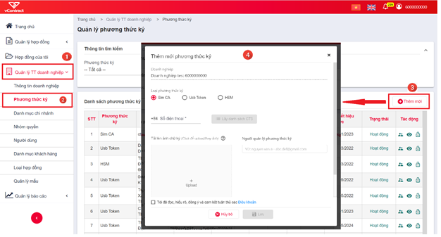
Thiết lập Nhóm Quyền - Tạo Người Dùng của đơn vị
-
Nhóm quyền – Người dùng: cấp tài khoản người dùng và quyền thao tác cho các nhân viên của đơn vị sử dụng dịch vụ. Với nhiều người dùng, đơn vị có thể cấu hình động người phê duyệt / ký duyệt / ký nháy các hợp đồng của mình.
-
Hệ thống quy định: chức năng này chỉ áp dụng cho đơn vị sử dụng dịch vụ Hợp đồng điện tử, không áp dụng cho khách hàng cuối chỉ tham gia ký kết
-
Các bước thiết lập Nhóm quyền, Người dùng:
-
Chọn menu chính Quản lý TT doanh nghiệp (menu trái)
-
Chọn menu chức năng Nhóm quyền hoặc Người dùng
-
Nhấn nút Thêm mới
-
Điền thông tin Nhóm quyền, Người dùng > Nhấn Thêm nhóm quyền / Thêm người dùng
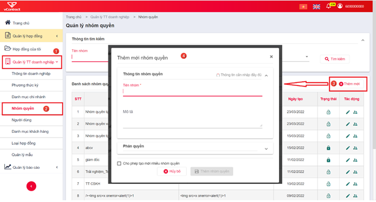
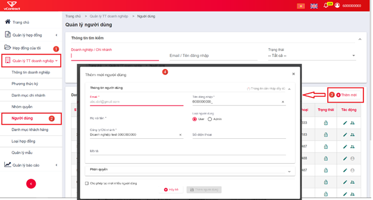
Tạo Khách hàng / Đối tác ký kết
-
Khách hàng / Đối tác: được hiểu là bên tham gia ký kết hợp đồng với đơn vị sử dụng dịch vụ Hợp đồng điện tử. Khi đơn vị sử dụng dịch vụ khởi tạo ký 1 hợp đồng, đơn vị đồng thời tạo tài khoản cho các bên tham gia này (nếu tài khoản chưa tồn tại)
-
Hệ thống quy định: chức năng này chỉ áp dụng cho đơn vị sử dụng dịch vụ Hợp đồng điện tử, không áp dụng cho khách hàng cuối chỉ tham gia ký kết. Các thông tin của khách hàng khi khởi tạo phải đúng, hợp pháp, hợp lệ.
-
Các bước tạo Khách hàng:
- Chọn menu chính Quản lý TT doanh nghiệp (menu trái)
- Chọn menu chức năng Danh mục khách hàng
-
Nhấn nút Thêm mới
-
Điền thông tin Khách hàng
- Nhấn Thêm khách hàng
Ngoài ra, người dùng có thể thêm nhanh khách hàng trên trang lập hợp đồng (tương đương bước 4 & 5)
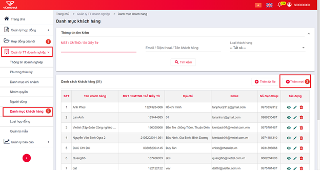
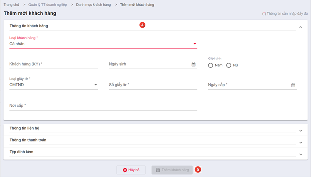
Chuẩn bị công cụ kết nối usbtoken
Để thực hiện thiết lập Phương thức ký hoặc Ký số hợp đồng bằng usb token, người dùng thao tác cần đáp ứng:
-
Có chứng thư số hợp lệ, còn thời hạn sử dụng.
-
Máy tính thao tác phải nhận được usbtoken cần sử dụng (Cài đặt token manager của nhà cung cấp usbtoken và xem được thông tin chứng thư số trong usb)
-
Máy tính thao tác phải cài và bật plugin ký của hệ thống Hợp đồng điện tử
-
Nếu máy tính chưa cài plugin ký
-
Tải plugin ký theo hướng dẫn trên form Thêm mới Phương thức ký hoặc trang Ký hợp đồng 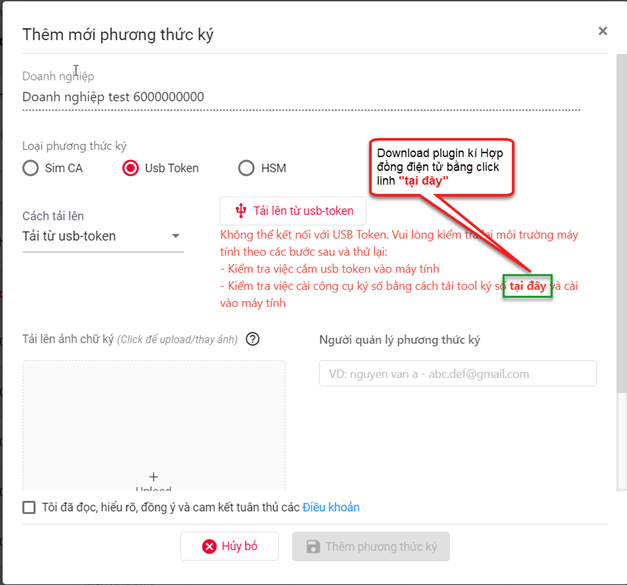 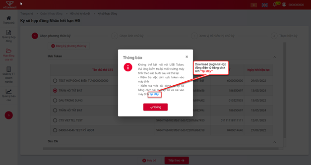
-
Cài đặt plugin theo các bước sau:
-
Nhấn chuột phải vào file cài đặt
-
Chọn Run as administrator
-
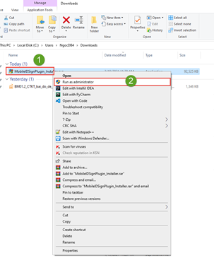
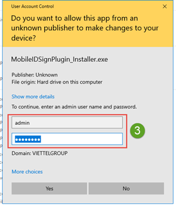
-
Nhập thông tin tài khoản admin nếu có
-
Thực hiện các bước cài đặt ứng dụng plugin
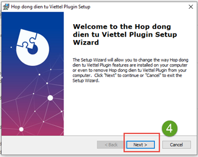
- Bật plugin ký:
- Tìm plugin đã cài đặt + nhấn chuột phải
- Chọn Run as administrator
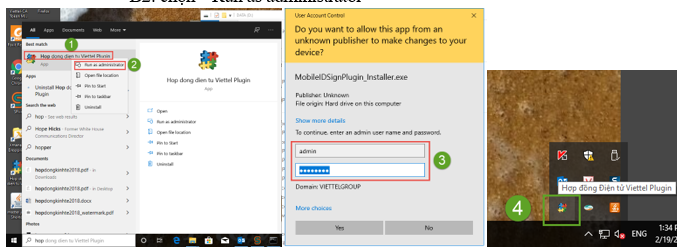
- Nhập thông tin tài khoản admin nếu có
- Plugin được bật thành công ở Taskbar
Sau khi đã cài đặt, bật plugin theo các bước nêu trên, người dùng thực hiện chức năng thiết lập Phương thức ký và Ký số hợp đồng như bình thường.